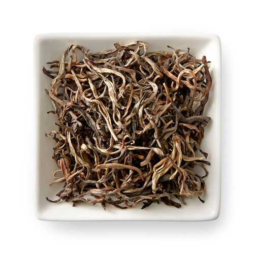

yellow Tea
Yellow tea is Probably the most rare variety of tea accounting for less than half a percentage of tea production in china. Yellow tea used to be an imperial tribute tea which meant that it was reserved only for the emperors, the reason for this is because yellow used to be the colour of the emperors in ancient china. The method to make yellow tea was actually lost for over 100 years and only recently discovered again in the 1970s. Yellow teas are withered in the sun and pan fried like green teas, but afterwards they are then steamed and placed in big piles and covered.In terms of flavor, Yellow tea is somewhere in between white and green tea.
